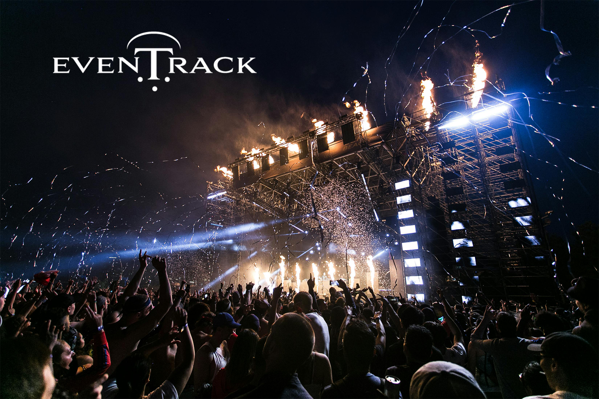
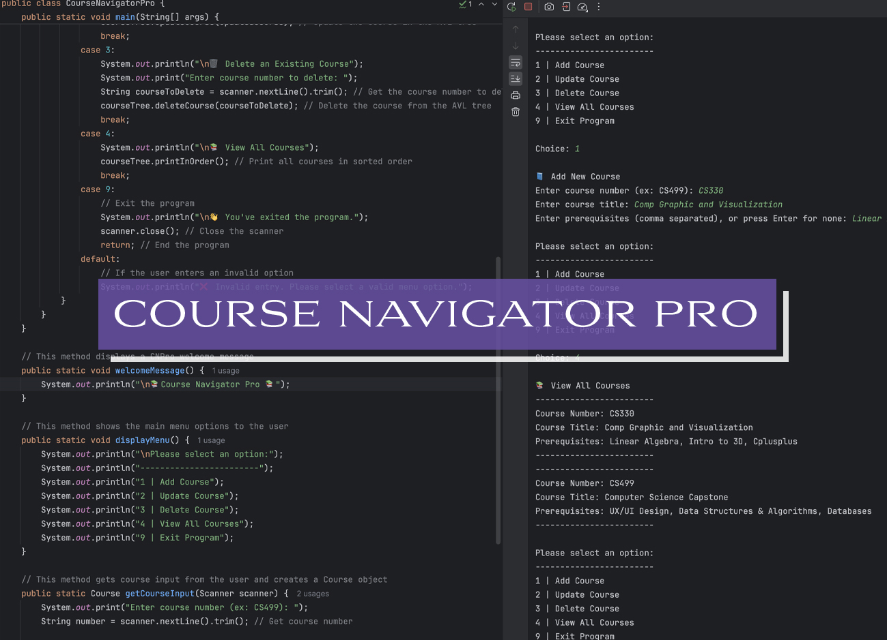

Professional Self-Assessment

As I approach the completion of my Bachelor of Science in Computer Science from Southern New Hampshire University, I reflect on a journey that has been both deeply personal and professionally transformative. With a decade-long career as a creative professional and Senior Graphic Designer for Fortune 500 companies—including Delta Air Lines, Global Payments, and The Home Depot—I entered this program determined to evolve into a technologist who could bridge design thinking with engineering precision. Today, I proudly stand at that intersection, equipped with the technical expertise, collaborative mindset, and creative ingenuity to thrive in the software engineering world.
The Computer Science program has served as a structured launchpad for my technical evolution. From foundational courses in data structures and algorithms to advanced topics in full-stack development and mobile app engineering, each assignment, project, and milestone helped shape the software engineer I am today. Developing my ePortfolio was an exercise in both reflection and application—it allowed me to showcase not only what I’ve built, but also how I think, solve problems, and approach real-world challenges.
My ePortfolio highlights two major capstone artifacts: EvenTrack and Course Navigator Pro. These applications represent more than just lines of code—they demonstrate my ability to design and develop solutions that are both scalable and user-focused. EvenTrack is a full-stack event management app designed with mobile-first principles and Firebase integration, while Course Navigator Pro uses complex data structures to parse, validate, and organize academic data for student use. Together, they reflect my technical depth, creative problem-solving, and attention to user experience.
 Course Navigator Pro - Data Structure & File Parsing Logic
Key Competency Reflections
- Collaborative Environments: I leveraged Git and GitHub for version control and project collaboration. I regularly resolved merge conflicts, created and reviewed pull requests, and maintained clean, well-documented code—all simulating real-world Agile workflows.
- Communication: My background in design helped me translate complex concepts visually and verbally. I produced documentation, tutorial videos, and user guides to clearly communicate ideas to both technical teams and non-technical stakeholders.
- Data Structures and Algorithms: I implemented recursive algorithms, hash maps, linked lists, and AVL tree logic—always benchmarking for runtime complexity and real-world efficiency.
- Software Engineering & Databases: My projects incorporated REST APIs, Firebase authentication, MongoDB, and SQL. I've designed scalable backend systems and ensured seamless front-end integration using React, JavaScript, and Android Studio.
- Security: My security-first approach included OWASP-aligned design, input validation, HTTPS usage, and Firebase security rules to ensure data integrity and user safety.
GitHub Contributions & Technical Visualization
Looking forward, I plan to pursue advanced study in artificial intelligence and system architecture. I aspire to develop intelligent systems that are ethical, accessible, and scalable. Just as important, I plan to continue mentoring aspiring technologists—especially those from underrepresented communities. As a Creative Technologist and Full-Stack Software Engineer, I bring both an artist’s eye and an engineer’s discipline to every challenge I tackle.